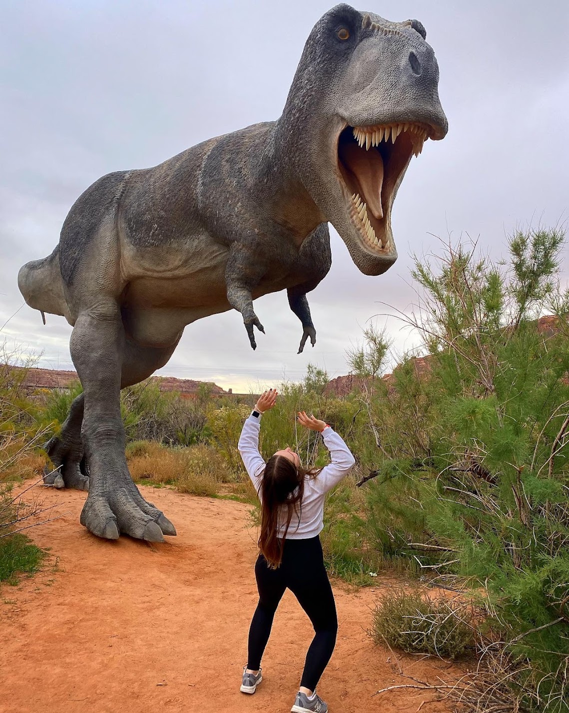

-
Education
- Brigham Young University
2018-Present | Provo, UT - Bachelor of Science: Public Health
- Minor: Business
- Kyiv Professional Pedagogical College named after Anton Makarenko
2014-2018 | Kyiv, Ukraine - Associate of Law

- Brigham Young University
-
Experience
- Moving Department, Brigham Young University | 2018-Present | Provo, UT
Student Secretary - Received, filed, delivered, and installed incoming orders
- Maintained electronic and paper files
- Directed personal projects that improved the quality of work and possibilities of the department
- Managed the receptionist area, including greeting visitors and responding to telephone, e-mail and in-person request information
- Created and maintained detailed spreadsheets using Excel to develop reports and lists
- Coordinated communication between multiple departments
- Conducted training and familiarized the new students with the campus and job responsibilities
- Defendo | 2014-2018 | Kyiv, Ukraine
Lawyer's Assistant - Arranged appointments over the phone and in person
- Handled documents with confidential information
- Represented clients' interests in the institutions of state government
- Responded to law related questions orally and in writing
- Investigative Aide, Svyatoshyn Police Headquarters, Headquarters of the National Police in Kyiv | 2017 | Kyiv, Ukraine
Training Internship - Identified evidence from crime scenes
- Created and handled documents with confidential information
- Informed people of their rights and duties
- Moving Department, Brigham Young University | 2018-Present | Provo, UT
-
Skills
- Fluent in Ukrainian, Russian, and English languages
- Advanced skills in Microsoft Office Suite (especially Word, Excel, PowerPoint)
- Proficient in HTML, VBA, and SQL
- Quick learner, self-motivated, well-organized
- Ability to work in a team or by myself, stress-resistant, problem-solving capabilities, dependable when it comes to meeting deadlines
-

Fun facts about me and things I do for fun
- I graduated high school when I was 13 years old.
- And moved across the wolrd to live on another continent by myself when I was 18.
- I love the Arches National Park, and I try to go at least twice a year.
- I love taking pictures and going on adventures.
- I didn't got o serve a mission for the Church of Jesus Christ of Latter-Day Saints myself, but I spent a good amount of time helping missionaries to learn Russian and Ukrainian.
- I like doing puzzles and watching animated movies.